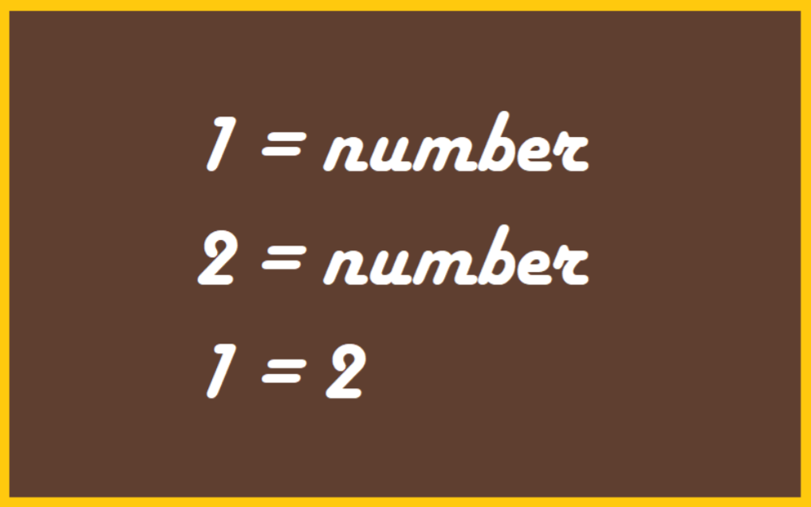

Very common and effective strategy of our perception (unconscious process) and thinking (both conscious and unconscious processes) is using an analogy, but it is almost always at odds with logic. Thinking by analogy differs from logical thinking by the following type of assumption. If an object (or system) A has properties X, Y and Z, then an object (or system) B, that has properties X and Y, is assumed to also have property Z. Analogy is one of the so called thinking heuristics or thinking shortcuts – a way how to get results very fast, without much effort, but with a price – lowered reliability.
This one also is an analogy, not very strong analogy…
Project was made by Team Latvia